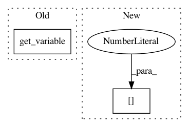

5aab2436c4548d51b6dde2fc7867a6804d6380fd,tensorlayer/layers/dense/base_dense.py,Dense,build,#Dense#Any#,97
Before Change
// self._make_weight(name=self.name, name2="W", shape=(self.n_in, self.n_units), initializer=self.)
// if self.b_init is not None:
// self._make_weight(name=self.name, name2="b", shape=(self.n_units))
self.W = tf.get_variable(
name="W", shape=(self.n_in, self.n_units), initializer=self.W_init, dtype=LayersConfig.tf_dtype,
**self.W_init_args
)
if self.b_init is not None:
try:
self.b = tf.get_variable(
name="b", shape=(self.n_units), initializer=self.b_init, dtype=LayersConfig.tf_dtype,
After Change
shape = [inputs_shape[1], self.n_units]
self._add_weight(self.name, "w1", tuple(shape))
self._add_weight(self.name, "b1", int(self.n_units))
outputs_shape = [inputs_shape[0], self.n_units]
return outputs_shape
"""
In pattern: SUPERPATTERN
Frequency: 4
Non-data size: 2
Instances
Project Name: tensorlayer/tensorlayer
Commit Name: 5aab2436c4548d51b6dde2fc7867a6804d6380fd
Time: 2019-01-08
Author: jingqing.zhang15@imperial.ac.uk
File Name: tensorlayer/layers/dense/base_dense.py
Class Name: Dense
Method Name: build
Project Name: pfnet-research/chainer-chemistry
Commit Name: b38efd0d693545672eb091e8f615d92c42c7058b
Time: 2018-12-09
Author: acc1ssnn9terias@gmail.com
File Name: chainer_chemistry/saliency/calculator/occlusion_calculator.py
Class Name: OcclusionCalculator
Method Name: _compute_core
Project Name: pfnet-research/chainer-chemistry
Commit Name: b38efd0d693545672eb091e8f615d92c42c7058b
Time: 2018-12-09
Author: acc1ssnn9terias@gmail.com
File Name: chainer_chemistry/saliency/calculator/integrated_gradients_calculator.py
Class Name: IntegratedGradientsCalculator
Method Name: _compute_core
Project Name: reinforceio/tensorforce
Commit Name: a4c4a4f2d33081806397784f96b113d5b3b32c9a
Time: 2018-02-08
Author: mi.schaarschmidt@gmail.com
File Name: tensorforce/core/memories/prioritized_replay.py
Class Name: PrioritizedReplay
Method Name: tf_retrieve_timesteps